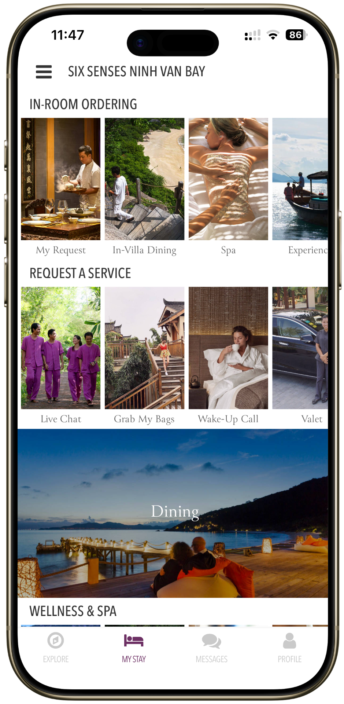
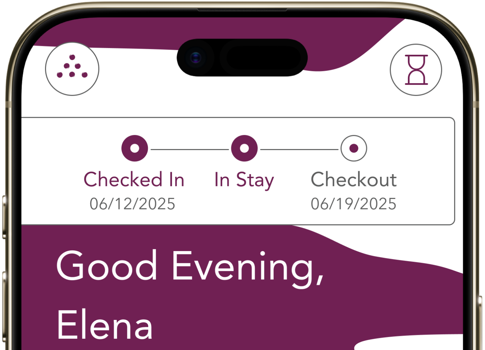
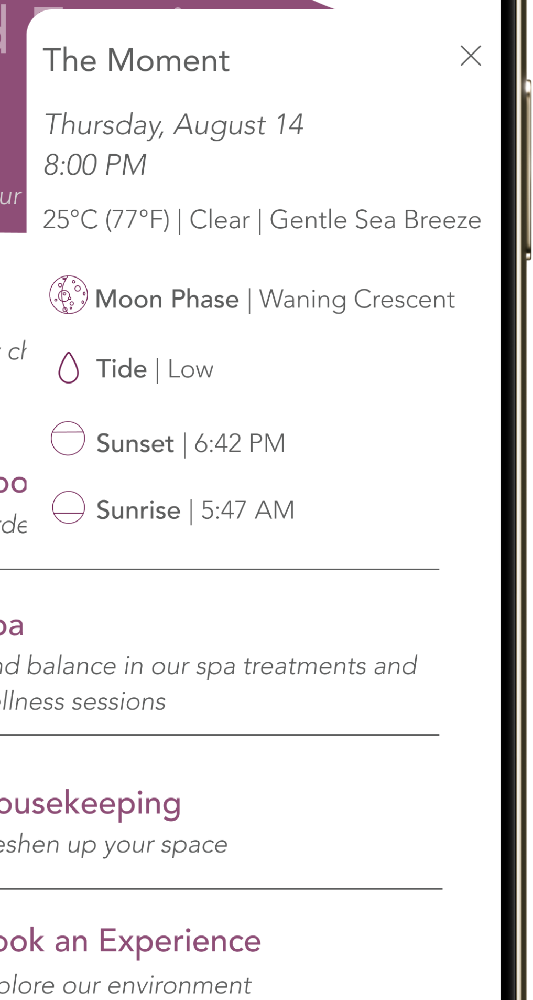
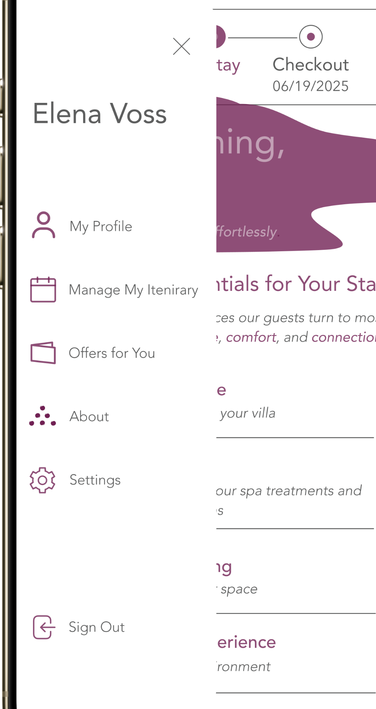
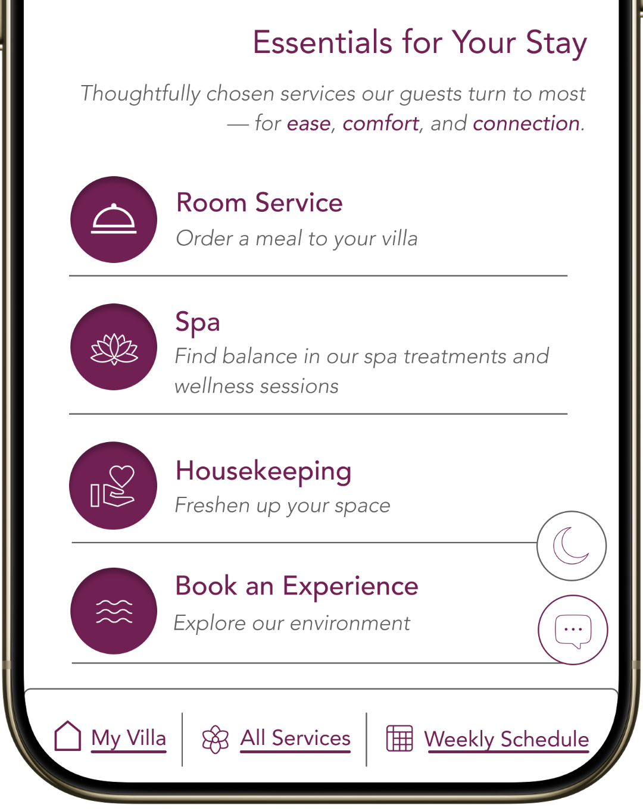
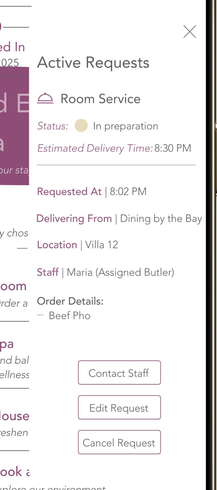
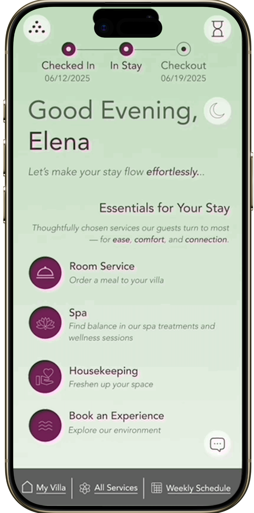
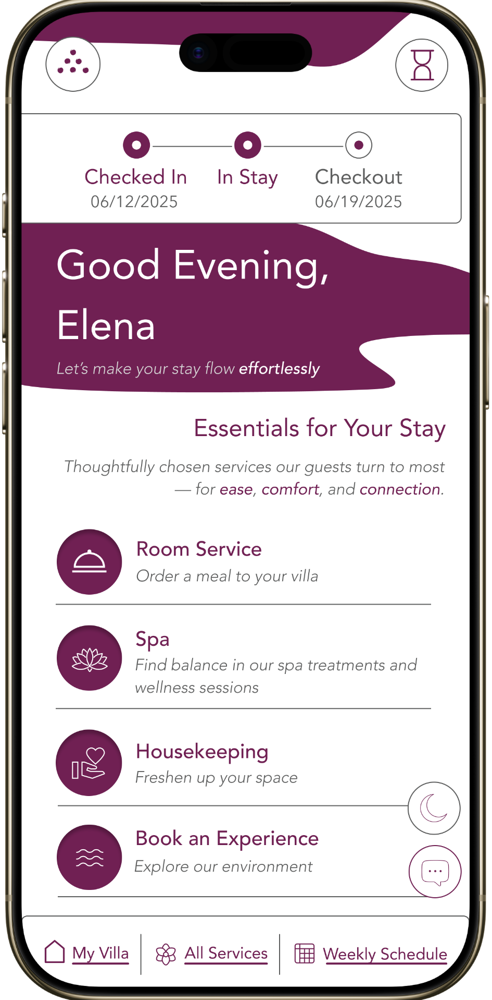

Six Senses Ninh Van Bay is a luxury wellness resort in Vietnam. The brand's promise is restoration — guests pay premium prices to put their nervous systems back together. Their app should feel like an extension of that promise. It doesn't.
The existing guest dashboard is visually polished but structurally cluttered: editorial photography over categories of overlapping services, promotional content above immediate needs, and no acknowledgment that someone might just want to order dinner without ten minutes of decision-making. It looks like a luxury brand. It works like a hotel app.
I spent five weeks redesigning it.

The studio brief gave us nine industries to choose from — automotive, healthcare, finance, ed-tech, smart home, environmental, and several others. I picked hospitality. The reason is small but worth naming: it's one of the only categories where design success isn't measured in task completion alone. It's measured in how someone feels after the task is done.
The brief framed the design problem as serving "business vs. leisure travelers" — adapting the interface based on traveler context. I narrowed it further. Business travelers want speed; that's a relatively solved design problem. Leisure travelers at a wellness resort want speed and stillness, which sounds like a contradiction until you start designing for it.
I built the case study around one specific leisure guest.
Elena is a creative director from New York. Thirty-nine. She runs on deadlines for ten months a year and visits Six Senses in the eleventh. She picked Six Senses specifically because the brand's marketing promises mindfulness, sensory immersion, and sustainability — three commitments her own work doesn't leave room for.
When Elena opens the existing Six Senses app, she's already in a slightly altered state. The flight has worn her down. The drive from the airport hasn't fully reset her. She wants the digital experience to meet her where she is, not demand more cognitive effort.
That's the design brief, restated through her.
"Luxury, to me, means never having to wait without losing the stillness I came here for."
I ran a heuristic analysis on the existing dashboard and a task analysis on a standard guest flow (order room service from the villa). Findings consolidated into eight pain points, but four of them carry the case:
Three different routes to "request a service," none clearly distinguished. A guest has to choose which button to press before they know what they need.
"Dining," "In-Room Ordering," "Request a Service" — overlap conceptually. Where does ordering room service live? It depends on the day.
Twelve simultaneous categories visible on first load. Each with its own editorial image. The eye doesn't know where to land.
The largest, most visually weighted real estate on the screen is dedicated to seasonal offers and brand storytelling — not to what guests actually need at the moment they open the app.
The pattern across all four: the app was designed to showcase the resort, not to be a digital sanctuary within it. Those are different design problems. The existing dashboard solved the first one beautifully. It didn't solve the second one at all.
This is the rule I tested every design decision against. Six Senses' brand is sensory abundance — wood, water, leaf, light, presence. The dashboard's job isn't to recreate that abundance digitally; the resort itself does that. The dashboard's job is to disappear into it. To give Elena what she needs without becoming another decision she has to make.
Two research tracks, each doing different work.
Six Senses-specific research informed Elena's character. The clientele Six Senses attracts skews toward high-end affluent travelers who expect immediacy, personalization, and autonomy — but who chose this brand specifically because it promised something slower than other luxury hotels. That tension is Elena's whole psychology.
Broader luxury hospitality research informed feature prioritization. Four findings shaped the redesign:
The third finding is the one that mattered most. "Calm efficiency" — those two words together, naming a thing the industry was already converging toward but rarely designing for explicitly. I built the dashboard around it.

A simple three-stage progress bar at the top: Checked In, In Stay, Checkout. It tells Elena where she is in her own trip without her having to think about it. Removes the small uncertainty that's a tax on rest.

Tonight's weather, moon phase, tide, sunset, sunrise. A small card that grounds Elena in her physical environment — what's happening outside her villa right now. Mindfulness as ambient data.

Profile, itinerary, preferences, settings — all under the Six Senses logo at the top-left of the dashboard. The brand mark becomes the entry to the personal layer of the experience.

Room Service. Spa. Housekeeping. Book an Experience. Four categories, each with a short descriptor. Everything else collapses into "All Services" or "Live Chat."
This is the central editing move — the original dashboard tried to surface twelve categories at once; mine surfaces four and trusts the secondary routes.

Once Elena orders something — a meal, a spa appointment, a wake-up call — the status lives in a compact card at the top of the dashboard. Tap it for the expanded state: ETA, location, assigned staff member, order details, contact button.
The flow below walks Elena through her dashboard. The Trip Tracker grounds her in her stay. The Moment surfaces tonight's environmental context. The four service blocks reduce her decision fatigue. She taps Room Service, orders beef pho from her villa in Ninh Van Bay, and confirms. From there, the Active Request card tracks the order back to her.
I tested the pre-final prototype with two participants, both asked to embody Elena for the room service task. 100% completion rate — both participants completed the task successfully with no assistance. Still, three findings drove next-iteration revisions:
Several text elements rendered below 16px at iPhone size, which strained reading even at standard distance. Addressed in the final prototype: bumped to 16px minimum, with 17px for body and 18px for primary CTAs.
A tester paused at the order detail screen: "What if I'm allergic to ginger or beansprouts?" The original prototype showed dish names without ingredient lists, which works for a guest who knows the cuisine and fails for a guest who doesn't. Carried forward: future iterations would add a collapsible ingredient breakdown under each dish — visible on demand, hidden by default.
A tester asked: "What if Elena is sharing this with someone — where does she add another set of utensils?" I'd designed for the solo guest and missed the shared scenario. Carried forward: a utensil count field on the order customization screen.


The phrase I keep returning to from this project: removing friction until function feels effortless. That's the design discipline luxury digital actually rewards. Not adding more — subtracting until what remains feels inevitable.
One tester said something I'm still thinking about. After completing the room service task, she described the prototype as "an app unlike any I've seen before." I took that as a compliment at first. Then I sat with it.
Unfamiliarity isn't always a virtue. The whole reason interfaces have conventions is that conventions reduce cognitive load — exactly the thing the dashboard is supposed to do. If a guest needs to learn a new interaction pattern to use a luxury hotel app, the calm I designed for is undercut by the small effort of figuring out where everything lives.
This is why I leaned hard into the Six Senses brand identity throughout the final version — the deep purple, the typographic restraint, the sensory iconography. If the interaction patterns are unfamiliar, the visual identity should at least be a homecoming. A guest who has stayed at Six Senses before should open the dashboard and feel that they already know it, even before they know how it works.
The next iteration would push further into familiar UI patterns — keep the silence, lose the unfamiliarity. The calmness I introduced should never compromise the dashboard's clarity.
This is the bigger thing I'm taking forward from Six Senses, beyond hospitality. Designing for restoration isn't the same as designing for novelty. The calmer the experience, the more it has to feel like something you already know.
Restoration isn't novelty. It's recognition.